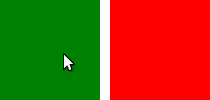

MouseArea QML Type
Enables simple mouse handling More...
| Import Statement: | import QtQuick 2.2 |
| Inherits: |
Properties
- acceptedButtons : Qt::MouseButtons
- containsMouse : bool
- cursorShape : Qt::CursorShape
- drag
- drag.target : Item
- drag.active : bool
- drag.axis : enumeration
- drag.minimumX : real
- drag.maximumX : real
- drag.minimumY : real
- drag.maximumY : real
- drag.filterChildren : bool
- drag.threshold : real
- enabled : bool
- hoverEnabled : bool
- mouseX : real
- mouseY : real
- pressed : bool
- pressedButtons : MouseButtons
- preventStealing : bool
- propagateComposedEvents : bool
Signals
- canceled()
- clicked(MouseEvent mouse)
- doubleClicked(MouseEvent mouse)
- entered()
- exited()
- positionChanged(MouseEvent mouse)
- pressAndHold(MouseEvent mouse)
- pressed(MouseEvent mouse)
- released(MouseEvent mouse)
- wheel(WheelEvent wheel)
Detailed Description
A MouseArea is an invisible item that is typically used in conjunction with a visible item in order to provide mouse handling for that item. By effectively acting as a proxy, the logic for mouse handling can be contained within a MouseArea item.
The enabled property is used to enable and disable mouse handling for the proxied item. When disabled, the mouse area becomes transparent to mouse events.
The pressed read-only property indicates whether or not the user is holding down a mouse button over the mouse area. This property is often used in bindings between properties in a user interface. The containsMouse read-only property indicates the presence of the mouse cursor over the mouse area but, by default, only when a mouse button is held down; see the containsMouse documentation for details.
Information about the mouse position and button clicks are provided via signals for which event handler properties are defined. The most commonly used involved handling mouse presses and clicks: onClicked, onDoubleClicked, onPressed, onReleased and onPressAndHold. It's also possible to handle mouse wheel events via the onWheel signal.
If a MouseArea overlaps with the area of other MouseArea items, you can choose to propagate clicked, doubleClicked and pressAndHold events to these other items by setting propagateComposedEvents to true and rejecting events that should be propagated. See the propagateComposedEvents documentation for details.
By default, MouseArea items only report mouse clicks and not changes to the position of the mouse cursor. Setting the hoverEnabled property ensures that handlers defined for onPositionChanged, onEntered and onExited are used and that the containsMouse property is updated even when no mouse buttons are pressed.
Example Usage

The following example uses a MouseArea in a Rectangle that changes the Rectangle color to red when clicked:
import QtQuick 2.0 Rectangle { width: 100; height: 100 color: "green" MouseArea { anchors.fill: parent onClicked: { parent.color = 'red' } } }
Many MouseArea signals pass a mouse parameter that contains additional information about the mouse event, such as the position, button, and any key modifiers.
Here is an extension of the previous example that produces a different color when the area is right clicked:
Rectangle { width: 100; height: 100 color: "green" MouseArea { anchors.fill: parent acceptedButtons: Qt.LeftButton | Qt.RightButton onClicked: { if (mouse.button == Qt.RightButton) parent.color = 'blue'; else parent.color = 'red'; } } }
See also MouseEvent, MouseArea example, and Important Concepts In Qt Quick - User Input.
Property Documentation
acceptedButtons : Qt::MouseButtons |
This property holds the mouse buttons that the mouse area reacts to.
To specify that the MouseArea will react to multiple buttons, Qt::MouseButtons flag values are combined using the "|" (or) operator:
MouseArea { acceptedButtons: Qt.LeftButton | Qt.RightButton }
To indicate that all possible mouse buttons are to be accepted, the special value 'Qt.AllButtons' may be used:
MouseArea { acceptedButtons: Qt.AllButtons }
The default value is Qt.LeftButton.
containsMouse : bool |
This property holds whether the mouse is currently inside the mouse area.
Warning: This property is not updated if the area moves under the mouse: containsMouse will not change. In addition, if hoverEnabled is false, containsMouse will only be valid when the mouse is pressed while the mouse cursor is inside the MouseArea.
cursorShape : Qt::CursorShape |
This property holds the cursor shape for this mouse area. Note that on platforms that do not display a mouse cursor this may have no effect.
The available cursor shapes are:
- Qt.ArrowCursor
- Qt.UpArrowCursor
- Qt.CrossCursor
- Qt.WaitCursor
- Qt.IBeamCursor
- Qt.SizeVerCursor
- Qt.SizeHorCursor
- Qt.SizeBDiagCursor
- Qt.SizeFDiagCursor
- Qt.SizeAllCursor
- Qt.BlankCursor
- Qt.SplitVCursor
- Qt.SplitHCursor
- Qt.PointingHandCursor
- Qt.ForbiddenCursor
- Qt.WhatsThisCursor
- Qt.BusyCursor
- Qt.OpenHandCursor
- Qt.ClosedHandCursor
- Qt.DragCopyCursor
- Qt.DragMoveCursor
- Qt.DragLinkCursor
In order to only set a mouse cursor shape for a region without reacting to mouse events set the acceptedButtons to none:
MouseArea { cursorShape: Qt.IBeamCursor; acceptedButtons: Qt.NoButton }
The default value is Qt.ArrowCursor.
See also Qt::CursorShape.
drag.target : Item |
drag.active : bool |
drag.axis : enumeration |
drag.minimumX : real |
drag.maximumX : real |
drag.minimumY : real |
drag.maximumY : real |
drag.filterChildren : bool |
drag.threshold : real |
drag provides a convenient way to make an item draggable.
- drag.target specifies the id of the item to drag.
- drag.active specifies if the target item is currently being dragged.
- drag.axis specifies whether dragging can be done horizontally (Drag.XAxis), vertically (Drag.YAxis), or both (Drag.XAndYAxis)
- drag.minimum and drag.maximum limit how far the target can be dragged along the corresponding axes.
The following example displays a Rectangle that can be dragged along the X-axis. The opacity of the rectangle is reduced when it is dragged to the right.
Rectangle { id: container width: 600; height: 200 Rectangle { id: rect width: 50; height: 50 color: "red" opacity: (600.0 - rect.x) / 600 MouseArea { anchors.fill: parent drag.target: rect drag.axis: Drag.XAxis drag.minimumX: 0 drag.maximumX: container.width - rect.width } } }
Note: Items cannot be dragged if they are anchored for the requested drag.axis. For example, if anchors.left or anchors.right was set for rect in the above example, it cannot be dragged along the X-axis. This can be avoided by settng the anchor value to undefined in an onPressed handler.
If drag.filterChildren is set to true, a drag can override descendant MouseAreas. This enables a parent MouseArea to handle drags, for example, while descendants handle clicks:
drag.threshold determines the threshold in pixels of when the drag operation should start. By default this is bound to a platform dependent value. This property was added in Qt Quick 2.2.
import QtQuick 2.0 Rectangle { width: 480 height: 320 Rectangle { x: 30; y: 30 width: 300; height: 240 color: "lightsteelblue" MouseArea { anchors.fill: parent drag.target: parent; drag.axis: "XAxis" drag.minimumX: 30 drag.maximumX: 150 drag.filterChildren: true Rectangle { color: "yellow" x: 50; y : 50 width: 100; height: 100 MouseArea { anchors.fill: parent onClicked: console.log("Clicked") } } } } }
enabled : bool |
This property holds whether the item accepts mouse events.
By default, this property is true.
hoverEnabled : bool |
This property holds whether hover events are handled.
By default, mouse events are only handled in response to a button event, or when a button is pressed. Hover enables handling of all mouse events even when no mouse button is pressed.
This property affects the containsMouse property and the onEntered, onExited and onPositionChanged signals.
mouseX : real |
These properties hold the coordinates of the mouse cursor.
If the hoverEnabled property is false then these properties will only be valid while a button is pressed, and will remain valid as long as the button is held down even if the mouse is moved outside the area.
By default, this property is false.
If hoverEnabled is true then these properties will be valid when:
- no button is pressed, but the mouse is within the MouseArea (containsMouse is true).
- a button is pressed and held, even if it has since moved out of the area.
The coordinates are relative to the MouseArea.
mouseY : real |
These properties hold the coordinates of the mouse cursor.
If the hoverEnabled property is false then these properties will only be valid while a button is pressed, and will remain valid as long as the button is held down even if the mouse is moved outside the area.
By default, this property is false.
If hoverEnabled is true then these properties will be valid when:
- no button is pressed, but the mouse is within the MouseArea (containsMouse is true).
- a button is pressed and held, even if it has since moved out of the area.
The coordinates are relative to the MouseArea.
pressed : bool |
This property holds whether any of the acceptedButtons are currently pressed.
This property holds the mouse buttons currently pressed.
It contains a bitwise combination of:
- Qt.LeftButton
- Qt.RightButton
- Qt.MiddleButton
The code below displays "right" when the right mouse buttons is pressed:
Text { text: mouseArea.pressedButtons & Qt.RightButton ? "right" : "" horizontalAlignment: Text.AlignHCenter verticalAlignment: Text.AlignVCenter MouseArea { id: mouseArea anchors.fill: parent acceptedButtons: Qt.LeftButton | Qt.RightButton } }
Note: this property only handles buttons specified in acceptedButtons.
See also acceptedButtons.
preventStealing : bool |
This property holds whether the mouse events may be stolen from this MouseArea.
If a MouseArea is placed within an item that filters child mouse events, such as Flickable, the mouse events may be stolen from the MouseArea if a gesture is recognized by the parent item, e.g. a flick gesture. If preventStealing is set to true, no item will steal the mouse events.
Note that setting preventStealing to true once an item has started stealing events will have no effect until the next press event.
By default this property is false.
propagateComposedEvents : bool |
This property holds whether composed mouse events will automatically propagate to other MouseAreas that overlap with this MouseArea but are lower in the visual stacking order. By default, this property is false.
MouseArea contains several composed events: clicked, doubleClicked and pressAndHold. These are composed of basic mouse events, like pressed, and can be propagated differently in comparison to basic events.
If propagateComposedEvents is set to true, then composed events will be automatically propagated to other MouseAreas in the same location in the scene. Each event is propagated to the next enabled MouseArea beneath it in the stacking order, propagating down this visual hierarchy until a MouseArea accepts the event. Unlike pressed events, composed events will not be automatically accepted if no handler is present.
For example, below is a yellow Rectangle that contains a blue Rectangle. The blue rectangle is the top-most item in the hierarchy of the visual stacking order; it will visually rendered above the yellow rectangle. Since the blue rectangle sets propagateComposedEvents to true, and also sets MouseEvent::accepted to false for all received clicked events, any clicked events it receives are propagated to the MouseArea of the yellow rectangle beneath it.
import QtQuick 2.0 Rectangle { color: "yellow" width: 100; height: 100 MouseArea { anchors.fill: parent onClicked: console.log("clicked yellow") } Rectangle { color: "blue" width: 50; height: 50 MouseArea { anchors.fill: parent propagateComposedEvents: true onClicked: { console.log("clicked blue") mouse.accepted = false } } } }
Clicking on the blue rectangle will cause the onClicked handler of its child MouseArea to be invoked; the event will then be propagated to the MouseArea of the yellow rectangle, causing its own onClicked handler to be invoked.
This property greatly simplifies the usecase of when you want to have overlapping MouseAreas handling the composed events together. For example: if you want one MouseArea to handle clicked signals and the other to handle pressAndHold, or if you want one MouseArea to handle clicked most of the time, but pass it through when certain conditions are met.
Signal Documentation
This signal is emitted when mouse events have been canceled, either because an event was not accepted, or because another item stole the mouse event handling.
This signal is for advanced use: it is useful when there is more than one MouseArea that is handling input, or when there is a MouseArea inside a Flickable. In the latter case, if you execute some logic in the onPressed signal handler and then start dragging, the Flickable will steal the mouse handling from the MouseArea. In these cases, to reset the logic when the MouseArea has lost the mouse handling to the Flickable, canceled should be handled in addition to released.
The corresponding handler is onCanceled.
clicked(MouseEvent mouse) |
This signal is emitted when there is a click. A click is defined as a press followed by a release, both inside the MouseArea (pressing, moving outside the MouseArea, and then moving back inside and releasing is also considered a click).
The mouse parameter provides information about the click, including the x and y position of the release of the click, and whether the click was held.
When handling this signal, changing the accepted property of the mouse parameter has no effect.
The corresponding handler is onClicked.
doubleClicked(MouseEvent mouse) |
This signal is emitted when there is a double-click (a press followed by a release followed by a press). The mouse parameter provides information about the click, including the x and y position of the release of the click, and whether the click was held.
When handling this signal, if the accepted property of the mouse parameter is set to false, the pressed/released/clicked signals will be emitted for the second click; otherwise they are suppressed. The accepted property defaults to true.
The corresponding handler is onDoubleClicked.
This signal is emitted when the mouse enters the mouse area.
By default this signal is only emitted if a button is currently pressed. Set hoverEnabled to true to emit this signal even when no mouse button is pressed.
The corresponding handler is onEntered.
See also hoverEnabled.
This signal is emitted when the mouse exits the mouse area.
By default this signal is only emitted if a button is currently pressed. Set hoverEnabled to true to emit this signal even when no mouse button is pressed.
The example below shows a fairly typical relationship between two MouseAreas, with mouseArea2 on top of mouseArea1. Moving the mouse into mouseArea2 from mouseArea1 will cause mouseArea1 to emit the exited signal.
Rectangle { width: 400; height: 400 MouseArea { id: mouseArea1 anchors.fill: parent hoverEnabled: true } MouseArea { id: mouseArea2 width: 100; height: 100 anchors.centerIn: parent hoverEnabled: true } }
If instead you give the two MouseAreas a parent-child relationship, moving the mouse into mouseArea2 from mouseArea1 will not cause mouseArea1 to emit exited. Instead, they will both be considered to be simultaneously hovered.
The corresponding handler is onExited.
See also hoverEnabled.
positionChanged(MouseEvent mouse) |
This signal is emitted when the mouse position changes.
The mouse parameter provides information about the mouse, including the x and y position, and any buttons currently pressed.
By default this signal is only emitted if a button is currently pressed. Set hoverEnabled to true to emit this signal even when no mouse button is pressed.
When handling this signal, changing the accepted property of the mouse parameter has no effect.
The corresponding handler is onPositionChanged.
pressAndHold(MouseEvent mouse) |
This signal is emitted when there is a long press (currently 800ms). The mouse parameter provides information about the press, including the x and y position of the press, and which button is pressed.
When handling this signal, changing the accepted property of the mouse parameter has no effect.
The corresponding handler is onPressAndHold.
pressed(MouseEvent mouse) |
This signal is emitted when there is a press. The mouse parameter provides information about the press, including the x and y position and which button was pressed.
When handling this signal, use the accepted property of the mouse parameter to control whether this MouseArea handles the press and all future mouse events until release. The default is to accept the event and not allow other MouseAreas beneath this one to handle the event. If accepted is set to false, no further events will be sent to this MouseArea until the button is next pressed.
The corresponding handler is onPressed.
released(MouseEvent mouse) |
This signal is emitted when there is a release. The mouse parameter provides information about the click, including the x and y position of the release of the click, and whether the click was held.
When handling this signal, changing the accepted property of the mouse parameter has no effect.
The corresponding handler is onReleased.
See also canceled.
wheel(WheelEvent wheel) |
This signal is emitted in response to both mouse wheel and trackpad scroll gestures.
The wheel parameter provides information about the event, including the x and y position, any buttons currently pressed, and information about the wheel movement, including angleDelta and pixelDelta.
The corresponding handler is onWheel.